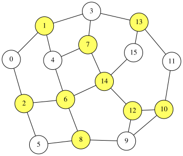

Minimum Vertex Cover Problem
A vertex cover of an undirected graph $G=(V,E)$ is a subset $S\subseteq V$ such that, for every edge $(u,v)\in E$, at least one of its endpoints belongs to $S$. The minimum vertex cover problem is to find a vertex cover with minimum cardinality.
We can formulate this problem as a QUBO expression. For an $n$-node graph $G=(V,E)$ whose nodes are labeled $0,1,\ldots,n−1$, we introduce $n$ binary variables $x_0,x_1,\ldots, x_{n-1}$, where $x_i=1$ if and only if node $i$ is selected (i.e., $i\in S$).
We use the following penalty term, which becomes 0 if and only if every edge is covered:
\[\begin{aligned} \text{constraint} &= \sum_{(i,j)\in E} (1-x_i)(1-x_j) \end{aligned}\]For an edge $(i,j)$, the product $(1-x_i)(1-x_j)$ equals 1 only when neither endpoint is selected, meaning the edge is uncovered. Therefore, the sum counts the number of uncovered edges.
Equivalently, since the condition $1\leq x_i+x_j\leq 2$ means that one or both endpoints are selected, we can write a QUBO++-style formulation as:
\[\begin{aligned} \text{constraint'} &= \sum_{(i,j)\in E} (1\leq x_i+x_j\leq 2) \\ &= \sum_{(i,j)\in E}(x_i+x_j-1)(x_i+x_j-2) \end{aligned}\]These two constraints are equivalent up to a constant scaling factor. Indeed, for binary variables,
\[\begin{aligned} (1-x_i)(1-x_j) & = 1 -x_i -x_i +x_ix_j,\\ (x_i+x_j-1)(x_i+x_j-2) &= 2 -2x_i -2x_i +2x_ix_j. \end{aligned}\]Both expressions evaluate to $1$ exactly when $x_i=x_j=0$ and to $0 $ otherwise; hence they impose the same feasibility condition (and differ only by an affine transformation when used as penalties).
The objective is to minimize the number of selected vertices:
\[\begin{aligned} \text{objective} &= \sum_{i=0}^{n-1}x_i \end{aligned}\]Finally, the QUBO expression $f$ is given by:
\[\begin{aligned} f &= \text{objective} + 2\times \text{constraint}, \text{or}\\ &= \text{objective} + \text{constraint'} \end{aligned}\]The penalty coefficient 2 is used to prioritize satisfying the constraint over minimizing the objective.
QUBO++ program for the minimum vertex cover problem
The following QUBO++ program solves the minimum vertex cover problem for a graph with $N=16$ nodes:
#include "qbpp.hpp"
#include "qbpp_exhaustive_solver.hpp"
#include "qbpp_graph.hpp"
int main() {
const size_t N = 16;
std::vector<std::pair<size_t, size_t>> edges = {
{0, 1}, {0, 2}, {1, 3}, {1, 4}, {2, 5}, {2, 6},
{3, 7}, {3, 13}, {4, 6}, {4, 7}, {5, 8}, {6, 8},
{6, 14}, {7, 14}, {8, 9}, {9, 10}, {9, 12}, {10, 11},
{10, 12}, {11, 13}, {12, 14}, {13, 15}, {14, 15}};
auto x = qbpp::var("x", N);
auto objective = qbpp::sum(x);
auto constraint = qbpp::toExpr(0);
for (const auto& e : edges) {
constraint += (1 - x[e.first]) * (1 - x[e.second]);
}
auto f = objective + constraint * 2;
f.simplify_as_binary();
auto solver = qbpp::exhaustive_solver::ExhaustiveSolver(f);
auto sol = solver.search();
std::cout << "objective = " << objective(sol) << std::endl;
std::cout << "constraint = " << constraint(sol) << std::endl;
qbpp::graph::GraphDrawer graph;
for (size_t i = 0; i < N; ++i) {
graph.add_node(qbpp::graph::Node(i).color(sol(x[i])));
}
for (const auto& e : edges) {
graph.add_edge(qbpp::graph::Edge(e.first, e.second));
}
graph.write("vertexcover.svg");
}
In this program, objective, constraint, and f are constructed according to the formulation above.
The Exhaustive Solver is applied to f to search for an optimal solution.
The obtained solution sol is visualized and saved as vertexcover.svg.
This program prints the following output:
objective = 9
constraint = 0
An optimal solution with objective value 9 and constraint value 0 is obtained. The resulting image, which highlights the selected vertices, is shown below:
